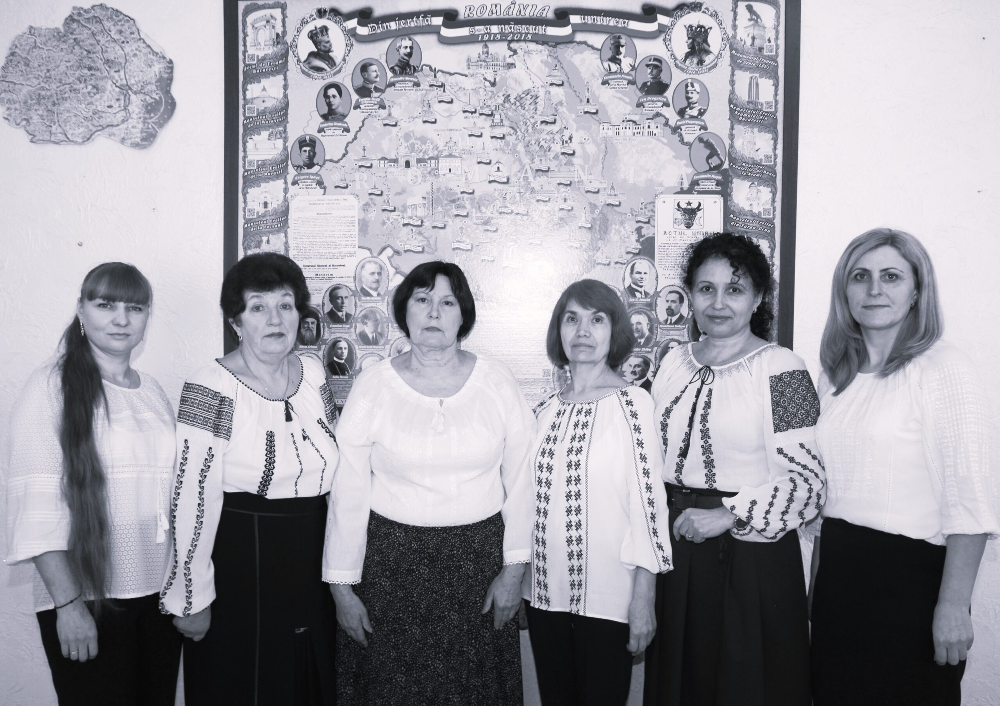

✕
„Cunoscând istoria, eroii, tradiția ne facem mai sociabili, mai
altruiști, mai iubitori de om și viața”
Nicolae Iorga
Pilonul european al drepturilor sociale
prevede că orice persoană are dreptul la educație, formare
profesională și învățare pe tot parcursul vieții, pentru a dobândi și
a menține aptitudini care îi permit să participe deplin în cadrul
societății și să gestioneze cu succes tranzițiile pe piața forței de
muncă. În cadrul orelor de Istorie și Geografie, profesorii
direcționează preadolescenții și adolescenții spre un anumit sistem de
valori necesare integrării în societate. Se simte nevoia acută de
studiere a modelelor culturale și istorice, o viziune adecvată despre
planeta pe care trăim - Terra, despre diversitatea naturală și
culturală la nivel local, național, regional, european și mondial,
necesară pentru a participa activ și pe deplin la viața civică și
socială.
Comisia metodică
Educa
ție socioumanistică
realizează obiective care sunt corelate cu activități specifice,
centrate pe dezvoltarea competențelor și formarea valorilor și
atitudinilor care să conducă la orientarea acțiunii și gândirii
elevilor spre cunoaștere și comunicare eficientă, precum și pe
valorizarea competențelor - cheie în activități școlare și
extrașcolare.
Activitățile de învățare urmăresc dobândirea competențelor funcționale
esențiale pentru reușita școlară și socială, precum și pe exersarea
unor deprinderi de ordin cognitiv și a argumentării în diferite
situații de învățare și de viață.
Datorită implicării liceului în proiectul „Tekwill în fiecare școală”
tema de cercetare este:
Eficientizarea procesului educațional prin implementarea
platformelor online în contextul Inițiativei
Școala digitală.
Obiectivele stabilite de Comisia Metodică sunt:
Pentru realizarea obiectivelor stabilite toți membrii
Comisiei metodice dispun de calculatoare, cabinetele dotate cu
tehnică, conectate la internet, astfel profesorii în cadrul orelor la
discipline folosesc TIC - ul utilizând programe și diverse materiale
didactice: PowerPoint, Canva, hărți digitale, imagini, videouri,
filme, citate etc.

Evaluarea este realizată prin administrarea testelor iniţiale,
formative și sumative, tezelor semestriale, proiectelor, produselor
elaborate conform cerințelor curriculare.
Principalele obiective și strategii stabilite în cadrul Comisiei
metodice
Educație socioumanistică
se realizează printr-un proces de instruire de calitate și de predare
- învățare - evaluare eficientă, caracterizat prin:
Activitatea Comisiei metodice se axează pe realizarea
competențelor generale ale disciplinelor care au ca finalitate
formarea și afirmarea personalității elevilor, accesarea și utilizarea
conținuturilor prin intermediul tehnologiei informației și
comunicării, precum și dobândirea unor deprinderi și tehnici de lucru
pentru pregătirea permanentă.
Membrii Comisiei metodice își propun să asigure o
educație de calitate prin promovarea valorilor naționale și general-umane.